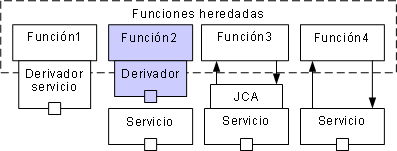
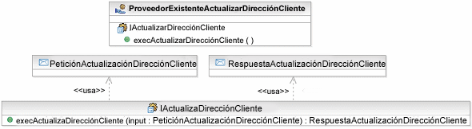

Uno nunca debe olvidar que muy pocas soluciones se construyen sin tener en cuenta aplicaciones existentes que
proporcionarán funcionalidad para dar soporte a la solución o con las que la solución debe interactuar. Por eso resulta
vital que las aplicaciones heredadas existentes que sean reutilizadas como parte de alguna solución se cataloguen y sus
funciones sean identificadas. Con una solución orientada a servicios, podemos tomar un número de rutas para integrar
nuevos servicios con funciones existentes. Éstas se muestran en la siguiente figura:
-
Recortar la función existente como servicio. En este caso, buscamos dejar la función tal cual, pero utilizar
herramientas o middleware para exponer la función existente como servicio. Por ejemplo, IBM ofrece funciones para
exponer transacciones de CICS heredadas como servicios web de SOAP.
-
Recortar y sustituir la función existente por un servicio. En este caso, recortamos una función tal como lo
hicimos anteriormente, pero utilizamos la especificación de servicio resultante para volver a desarrollar el
servicio posteriormente, sustituyendo el servicio original y redireccionando los clientes a la nueva
implementación.
-
Usar un adaptador más dócil para invocaciones de servicio. En algunos casos, no se puede recortar una
función y exponerla como servicio, pero podemos recortar la función en algo más fácil de integrar, caso de una
interfaz de cola de mensajes o la Arquitectura de conector Java (JCA). Esto permite que los nuevos servicios
accedan a las funciones in situ.
-
Integrar la función en el servicio. En algunos casos, obviamente, es posible que el nuevo servicio acceda a
la función heredada in situ, simplemente utilizando la función como un componente lógico dentro de la
implementación del servicio.

Debería tenerse en cuenta que las opciones tercera y cuarta ofrecen la mayor flexibilidad porque utilizan la función
existente pero no siguen exponiendo la función tal cual a los clientes. Por otro lado, las opciones primera y segunda
pueden presentar problemas con el recorte de funciones existentes como servicios ya que el rendimiento de protocolos de
servicio web y las no coincidencias entre formatos de datos nativos y XML pueden presentar problemas de rendimiento.
Los activos de software existentes y sus dependencias e interfaces serán analizadas para determinar se requieren
cambios para dar soporte a la funcionalidad empresarial. Por ejemplo, para
crear una interfaz de servicios web para una implementación heredada de una función empresarial, el análisis puede
entrañar el examen de la composición y el flujo de transacciones en línea o trabajos de lotes, o almacenamientos de
datos persistentes que ayudan a ejecutar dicha función. El diseño actual
de estas aplicaciones existentes puede que tenga que cambiar para dar soporte a la funcionalidd. También existe la necesidad de identificar las barreras potenciales para crear
una interfaz de servicios web con la calidad de servicio deseada. Por
ejemplo, una implementación por lotes monolítica de una función empresarial puede necesitar un tiempo de respuesta
posterior cuando se invoque como servicio.
Recorte de activos existentes como patrón de servicios
En algunos casos, sin embargo, resulta conveniente desarrollar una partición de servicio heredado en la que un conjunto
de funciones heredadas de nivel inferior estén expuestas individualmente como servicios. Esta partición sólo es
accesible para servicios de nivel superior que los utilizan en presentaciones a los clientes de una especificación
alineada con la empresa más detallada. Esta encapsulación de las funciones heredadas debería verse como una solución
temporal y sólo debería llevarse a cabo si las características de rendimiento de la tecnología de recorte se entienden
bien. Para obtener más información, consulte el concepto Particionamiento de soluciones.
Una forma de observar el recorte de una función heredada es una forma muy simplificada del elemento de modelo Proveedor de servicio, con un único servicio que ejecute una
única especificación con sólo una única operación. El siguiente diagrama muestra este patrón para la función heredada
"UpdateCustomerAddress".

Al adaptar este patrón, puede que desee hacer lo siguiente:
-
Es probable que un conjunto de funciones existentes sean suministradas por el mismo componente para que se utilice
el mismo proveedor de servicio.
-
El patrón anterior se generó automáticamente; puede que sea preferible renombrar el nombre de operación
predeterminado de "exec${service}".
-
Igualmente, sería válido renombrar los mensajes generados predeterminados; también en este punto, deberían
modelarse las estructuras de mensaje.
-
El patrón predeterminado da por supuesto que la operación toma una entrada de mensaje y devuelve un mensaje; puede
ser que la función heredada no devuelva ningún mensaje o sea sólo una notificación y la firma de la operación
generada deba corregirse.
-
El arquitecto/diseñador debería garantizar que se especifican los valores correctos para la propiedad
"allowedBindings" del proveedor de servicio.
|